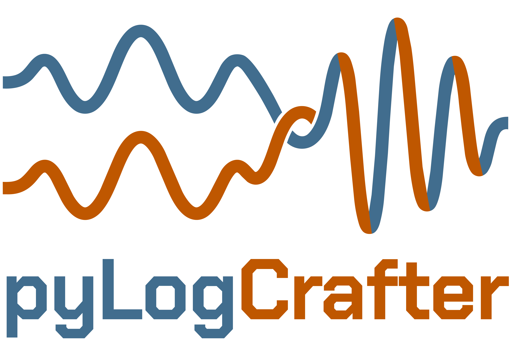

pyLogCrafter
pyLogCrafter (pylogcrafter) is for basin-scale well-log quality control, spatial normalization, gap filling, electrofacies and lithofacies tools, and visualization. It is aimed at large sets of LAS files with incomplete coverage, mixed vendors and vintages, and uneven quality.
In reservoir analysis and basin modeling, log QC is often the slow step before the science can start. The package is being built to automate cleaning and normalization, then to learn how several log types sit together at one place and depth. With that local context it can fill missing intervals and, in many cases, estimate a curve that was never measured. A new borehole that has only gamma ray is the example: the other curves are reasoned estimates, not new measurements. Preprocessed, gap-filled multi-log sets are also meant to feed automated stratigraphic correlation and tops picking (for example ChronoLog), and to support QC, high-resolution stratigraphy, geomodeling, and core-calibrated lithofacies work.
The name is reserved on PyPI as version 0.0.1. It is under active development and not ready for use. Anyone who tries a build is responsible for checking every output, and for decisions, risks, or errors that follow from using it. A fuller release is still to come. The public listing is proprietary: copyright 2026 Larry Syu-Heng Lai, all rights reserved.